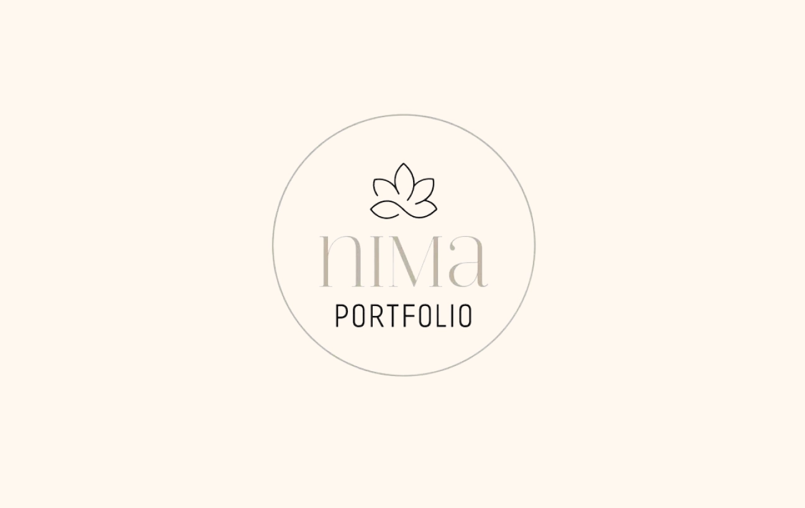
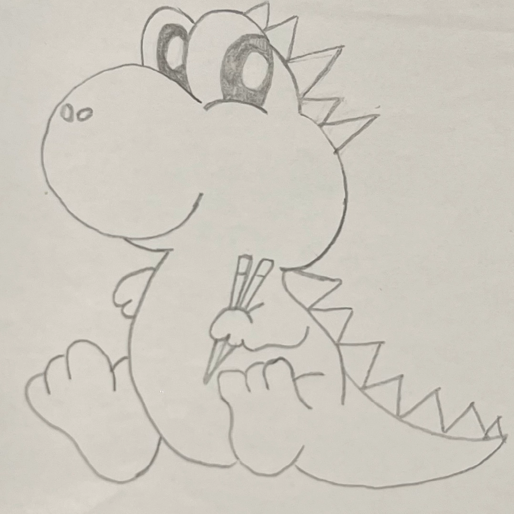

I dette tema, skulle jeg introduceres til at lave mit eget spil fra bunden af. Til at starte med
skulle jeg finde på en ide til
et
spil, hvor jeg derefter lavede nogle skitser af mine figurer der skulle indgå i spillet. Disse
skitser
skulle derefter rentegnes og laves inde i Adobe
Illustrator, som var et helt nyt
program jeg blev præsenteret for. Dette program lærte mig at lave alt mit grafik
ud af former, hvilket var en udfordrende men også sjov metode
at arbejde med. Da alt mit grafik var færdigt, skulle jeg importere alt over til formatet
SVG, da dette format er godt at skalere op eller ned i størrelse, uden at grafikken bliver
forvrænget.
Derefter skulle jeg igang med kodningen af spillet. Dette var klart den svære
del af temaet, da jeg
skulle kode spillet med Java Script, hvilket jeg ikke havde arbejdet særligt meget med i tidligere
temaer.
Udover Illustrator og Java Script, blev jeg også introduceret til aktivitets- og state machine
diagrammer, hvilket er en mere teknisk måde at vise spillets adfærd og opbygning på.